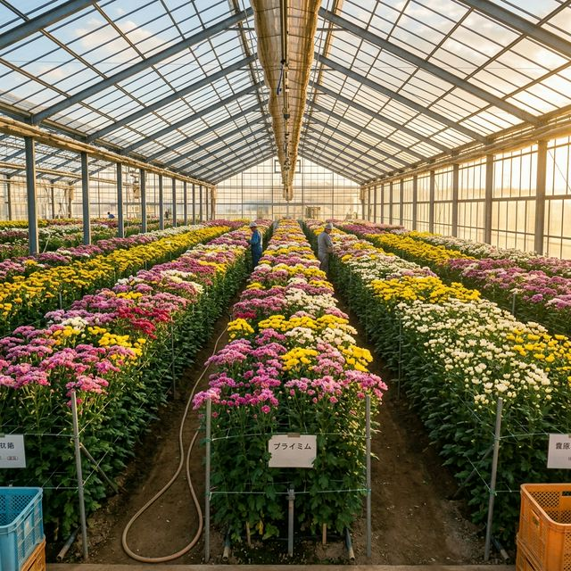

JAひまわりスプレーマム部会 / JA Himawari Spray Mum
愛知県豊川市から、全国へ。
From Toyokawa, Aichi to all of Japan.
About Us / 私たちについて
JAひまわりスプレーマム部会は、昭和49年に全国に先駆けて試作導入されて以来、半世紀以上にわたり栽培技術を確立してきました。
豊川の恵まれた自然環境と、生産者の丁寧な土づくりが、高品質なスプレーマムを支えています。
Strengths / 産地の強み
秋系・夏秋系の品種を組み合わせ、土に無理をさせない栽培スタイルで、一年を通じて安定した出荷を実現しています。
Stable year-round supply
統一規格での出荷と、圃場現場を重視した厳格な検品体制で、均一な品質をお届けします。
Quality assurance through joint inspection
豊川の豊かな水と肥沃な土壌を最大限に引き出すため、丁寧な土づくりを全生産者が実施しています。
Cultivation maximizing nature's bounty
仕入れ・見学・就農相談など、お気軽にご連絡ください。